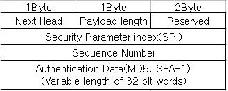

2. 인터넷 프로토콜 보안¶
2.1. SSL (Secure Socket Layer)¶
TCP를 사용하여 종단 간 (end to end) 신뢰할 수 있는 통신을 제공하는 암호화 프로토콜이다. SSL은 기본적으로 connection과 session라는 용어를 분리한다.
connection은 서버의 자원을 요청할때 연결되는 무수히 많은 TCP 연결을 뜻한다. session 같은 경우는 클라이언트와 서버 간의 연결로서 서로 인증을 위해 생성된 보안 키 값이다. 이때 session은 session이 생성된 이후의 모든 connection에서 사용될 수 있는 보안 키 값을 뜻한다.
다음은 SSL Stack 이다. SSL의 주요 구성요소 정도로 볼 수있다.

2.1.1. SSL handshake protocol¶
SSL Handshake protocol 동작 과정이다.

- client hello 에서는 클라이언트가 생성한 난수, 가능한 암호방식, 이전 세션 아이디 (존재한다면)를 전송
- server hello 에서는 서버가 생성한 난수, 암호방식 전송
- certificate 는 server -> client 인증서 전송
- server_key_exchange 는 server -> client 간 키교환이 필요할 경우 사용된다.
- certificate_request 는 server -> client 필요한 경우 인증서 요청
- server_hello_done 은 서버에서 보낼 메세지는 모두 보냈다는 의미
- certificate 는 server 요청 시 인증서 전송
- client_key_exchange 는 pre master key 전송
- certificate_verify 는 요청시 자신이 보낸 인증서가 유효한지 전자서명을 보내는 메세지
- change_cipher_spec 는 클라이언트가 다음 메세지 부터 (암호, 키교환, 서명, 압축)방식을 적용 하여 전송하겠다는 메세지. finished 전송
- change_cipher_spec 는 위와 마찬가지 의미. 다음 finished 전송
2.1.2. SSL record protocol¶
핸드쉐이크가 끝난 후 클라이언트와 서버는 MAC를 포함한 메세지를 암호화하여 통신한다.

먼저 메세지 fragmentation은 2^14 바이트로 된다. 그리고 옵션이 설정되있다면 메세지를 압축하고 MAC 코드를 계산한 후 메세지를 암호화 한다. 마지막으로 SSL Record Header를 암호문에 붙인다. SSL Record Header는 content_type, major version, minor version, compressed length 필드를 가지고 있다.
SSL은 종합적으로 대칭키 암호 방식과 MAC을 사용함으로써 기밀성 및 무결성을 보장하는 프로토콜이다.
2.2. IP Securiy¶
IPSec은 보안이 없는 Application에 사용될 수 있는 IP패킷 암호화 프로토콜이다. 주로 원격 작업이나 내부, 외부 접점 보안, 전자 상거래 등에 사용된다. IPSec은 2가지 헤더를 가지고 있다. AH(Authentication Header)및 ESP(Encapsulating Security Payload)이다. AH는 데이터 무결성 및 인증을 제공하고 ESP는 무결성, 인증, 기밀성을 제공한다.
Authentication Header 는 다음과 같다.
- next header : AH 다음에 오는 헤더의 프로토콜 번호를 담고있다.
- payload length : 이름과 다르게 AH 자체 길이를 뜻한다.
- security parameter index(SPI) : 데이터 그램에 쓰이는 보안 키값/보안 연관이다.
- sequence number : 보안 연관(SA)를 쓴다면 값이 증가된다. 재생 공격을 막기위해 사용된다.
- authentication data : 무결성 검사 값(ICV)이다.
Encapsulating Security Payload 는 다음과 같다.

- security parameter index(SPI) : 보안 연관이다.
- sequence number : 보안 연관과 관련된 연속적인 값이다.
- payload data : 암호화 된 상위 프로토콜 계층의 메세지이다.
- padding length : 패딩 길이
- next header : 다음 헤더의 프로토콜 번호
- authentication data : 무결성 검사 값(ICV)이다.
2.3. S/MIME¶
암호화된 이메일 메세지를 사용할 수 있는 암호화 프로토콜이다. 전자 봉투, 디지털 서명이 포함되어 전송된다. PGP에서 사용하는 방식을 그대로 사용한다. S/MIME는 디지털 서명은 인증 및 무결성 을 보장하고 전자 봉투를 사용함으로써 기밀성 을 보장한다.